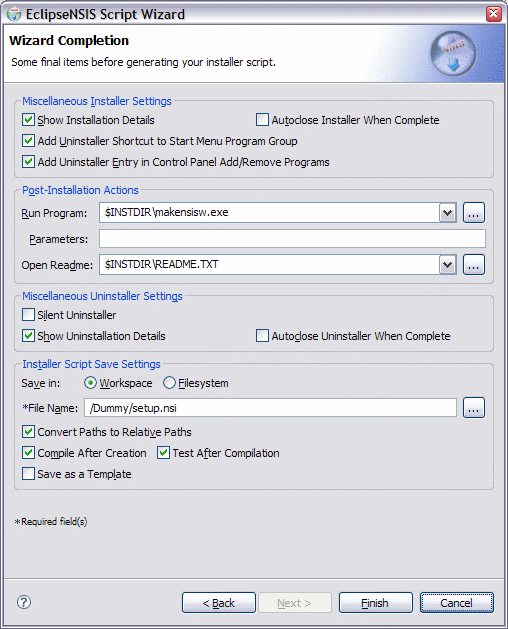

Script Wizard
Wizard Completion
This page is used to specify some final items before script generation.

- Show Installation Details
- Display a window in the installation page which shows details about installation actions. ← Back
- Auto-close Installer
- Automatically close the installer upon successful completion. ← Back
- Add Uninstaller Shortcut
- Add an uninstaller shortcut to the Start Menu program group. ← Back
- Add Uninstaller Entry
- Add an uninstallation entry to the Control Panel Add/Remove Programs dialog. ← Back
- Run Program
- Name of program to run after successful installation. ← Back
- Run Program Parameters
- Command-line parameters for program to run after installation. ← Back
- Open Readme
- Name of README file to open after successful installation. ← Back
- Silent Uninstaller
- Create a silent uninstaller, i.e., without a user interface. ← Back
- Show Uninstallation Details
- Display a window in the uninstallation page which shows details about uninstallation actions. ← Back
- Autoclose Uninstaller
- Automatically close the uninstaller upon successful completion. ← Back
- Save Location
- Location for saving the wizard-generated NSIS script. This is either the Eclipse workspace or the filesystem. ← Back
- File Name
- File name for saving the wizard-generated NSIS script. This is either a Eclipse workspace file name or a filesystem file name. ← Back
- Convert Paths to Relative Paths
- Convert absolute file paths to paths relative to the NSIS script file. This enhances portability of the script, e.g., if it is part of a source code repository. ← Back
- Compile After Creation
- Compile the generated script after creation. ← Back
- Test after Compilation
- Run the script generated installer after successful compilation. ← Back
- Save as a Template
- Save the current wizard settings as a Script template. This enables re-creation of the script at a later time. Please note that any changes made to the generated script after creation will NOT be reflected in the template. ← Back
Previous | Contents | Next
Copyright © 2004-2010 Sunil Kamath (IcemanK).